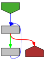
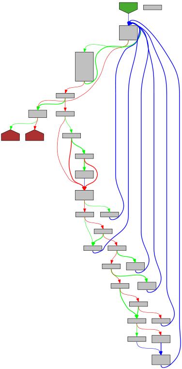

func compact(dst *bytes.Buffer, src []byte, escape bool) error {
origLen := dst.Len()
scan := newScanner()
defer freeScanner(scan)
start := 0
for i, c := range src {
if escape && (c == '<' || c == '>' || c == '&') {
if start < i {
dst.Write(src[start:i])
}
dst.WriteString(`\u00`)
dst.WriteByte(hex[c>>4])
dst.WriteByte(hex[c&0xF])
start = i + 1
}
// Convert U+2028 and U+2029 (E2 80 A8 and E2 80 A9).
if escape && c == 0xE2 && i+2 < len(src) && src[i+1] == 0x80 && src[i+2]&^1 == 0xA8 {
if start < i {
dst.Write(src[start:i])
}
dst.WriteString(`\u202`)
dst.WriteByte(hex[src[i+2]&0xF])
start = i + 3
}
v := scan.step(scan, c)
if v >= scanSkipSpace {
if v == scanError {
break
}
if start < i {
dst.Write(src[start:i])
}
start = i + 1
}
}
if scan.eof() == scanError {
dst.Truncate(origLen)
return scan.err
}
if start < len(src) {
dst.Write(src[start:])
}
return nil
}
|

|
func newline(dst *bytes.Buffer, prefix, indent string, depth int) {
dst.WriteByte('\n')
dst.WriteString(prefix)
for i := 0; i < depth; i++ {
dst.WriteString(indent)
}
}
// Indent appends to dst an indented form of the JSON-encoded src.
// Each element in a JSON object or array begins on a new,
// indented line beginning with prefix followed by one or more
// copies of indent according to the indentation nesting.
// The data appended to dst does not begin with the prefix nor
// any indentation, to make it easier to embed inside other formatted JSON data.
// Although leading space characters (space, tab, carriage return, newline)
// at the beginning of src are dropped, trailing space characters
// at the end of src are preserved and copied to dst.
// For example, if src has no trailing spaces, neither will dst;
// if src ends in a trailing newline, so will dst.
|

|
func Indent(dst *bytes.Buffer, src []byte, prefix, indent string) error {
origLen := dst.Len()
scan := newScanner()
defer freeScanner(scan)
needIndent := false
depth := 0
for _, c := range src {
scan.bytes++
v := scan.step(scan, c)
if v == scanSkipSpace {
continue
}
if v == scanError {
break
}
if needIndent && v != scanEndObject && v != scanEndArray {
needIndent = false
depth++
newline(dst, prefix, indent, depth)
}
// Emit semantically uninteresting bytes
// (in particular, punctuation in strings) unmodified.
if v == scanContinue {
dst.WriteByte(c)
continue
}
// Add spacing around real punctuation.
switch c {
case '{', '[':
// delay indent so that empty object and array are formatted as {} and [].
needIndent = true
dst.WriteByte(c)
case ',':
dst.WriteByte(c)
newline(dst, prefix, indent, depth)
case ':':
dst.WriteByte(c)
dst.WriteByte(' ')
case '}', ']':
if needIndent {
// suppress indent in empty object/array
needIndent = false
} else {
depth--
newline(dst, prefix, indent, depth)
}
dst.WriteByte(c)
default:
dst.WriteByte(c)
}
}
if scan.eof() == scanError {
dst.Truncate(origLen)
return scan.err
}
return nil
}
|

|